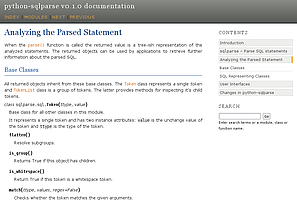
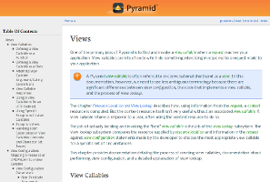

HTML¶
Sphinx为HTML和基于HTML的格式提供了许多构建器。
生成器¶
待处理
在 ‘builders’ 文档被拆分时填充。
主题¶
0.6 新版功能.
注解
This section provides information about using pre-existing HTML themes. If you wish to create your own theme, refer to HTML主题支持.
Sphinx supports changing the appearance of its HTML output via themes. A theme is a collection of HTML templates, stylesheet(s) and other static files. Additionally, it has a configuration file which specifies from which theme to inherit, which highlighting style to use, and what options exist for customizing the theme’s look and feel.
Themes are meant to be project-unaware, so they can be used for different projects without change.
使用主题¶
Using a theme provided with Sphinx is easy. Since these
do not need to be installed, you only need to set the html_theme
config value. For example, to enable the classic theme, add the following
to conf.py:
html_theme = "classic"
You can also set theme-specific options using the html_theme_options
config value. These options are generally used to change the look and feel of
the theme. For example, to place the sidebar on the right side and a black
background for the relation bar (the bar with the navigation links at the
page’s top and bottom), add the following conf.py:
html_theme_options = {
"rightsidebar": "true",
"relbarbgcolor": "black"
}
If the theme does not come with Sphinx, it can be in two static forms or as a
Python package. For the static forms, either a directory (containing
theme.conf and other needed files), or a zip file with the same
contents is supported. The directory or zipfile must be put where Sphinx can
find it; for this there is the config value html_theme_path. This
can be a list of directories, relative to the directory containing
conf.py, that can contain theme directories or zip files. For example,
if you have a theme in the file blue.zip, you can put it right in the
directory containing conf.py and use this configuration:
html_theme = "blue"
html_theme_path = ["."]
The third form is a Python package. If a theme you want to use is distributed as a Python package, you can use it after installing
# installing theme package
$ pip install sphinxjp.themes.dotted
Once installed, this can be used in the same manner as a directory or zipfile-based theme:
html_theme = "dotted"
For more information on the design of themes, including information about writing your own themes, refer to HTML主题支持.
内置主题¶
主题概述 |
|
alabaster |
classic |
sphinxdoc |
scrolls |
 agogo |
traditional |
nature |
haiku |
 pyramid |
bizstyle |


Sphinx comes with a selection of themes to choose from.
These themes are:
- basic
This is a basically unstyled layout used as the base for the other themes, and usable as the base for custom themes as well. The HTML contains all important elements like sidebar and relation bar. There are these options (which are inherited by the other themes):
nosidebar (true or false): Don’t include the sidebar. Defaults to
False.sidebarwidth (int or str): Width of the sidebar in pixels. This can be an int, which is interpreted as pixels or a valid CSS dimension string such as ‘70em’ or ‘50%’. Defaults to 230 pixels.
body_min_width (int or str): Minimal width of the document body. This can be an int, which is interpreted as pixels or a valid CSS dimension string such as ‘70em’ or ‘50%’. Use 0 if you don’t want a width limit. Defaults may depend on the theme (often 450px).
body_max_width (int or str): Maximal width of the document body. This can be an int, which is interpreted as pixels or a valid CSS dimension string such as ‘70em’ or ‘50%’. Use ‘none’ if you don’t want a width limit. Defaults may depend on the theme (often 800px).
- alabaster
Alabaster theme is a modified “Kr” Sphinx theme from @kennethreitz (especially as used in his Requests project), which was itself originally based on @mitsuhiko’s theme used for Flask & related projects. Refer to its installation page for information on how to configure
html_sidebarsfor its use.- classic
This is the classic theme, which looks like the Python 2 documentation. It can be customized via these options:
rightsidebar (true or false): Put the sidebar on the right side. Defaults to
False.stickysidebar (true or false): Make the sidebar “fixed” so that it doesn’t scroll out of view for long body content. This may not work well with all browsers. Defaults to
False.collapsiblesidebar (true or false): Add an experimental JavaScript snippet that makes the sidebar collapsible via a button on its side. Defaults to
False.externalrefs (true or false): Display external links differently from internal links. Defaults to
False.
There are also various color and font options that can change the color scheme without having to write a custom stylesheet:
footerbgcolor (CSS color): Background color for the footer line.
footertextcolor (CSS color): Text color for the footer line.
sidebarbgcolor (CSS color): Background color for the sidebar.
sidebarbtncolor (CSS color): Background color for the sidebar collapse button (used when collapsiblesidebar is
True).sidebartextcolor (CSS color): Text color for the sidebar.
sidebarlinkcolor (CSS color): Link color for the sidebar.
relbarbgcolor (CSS color): Background color for the relation bar.
relbartextcolor (CSS color): Text color for the relation bar.
relbarlinkcolor (CSS color): Link color for the relation bar.
bgcolor (CSS color): Body background color.
textcolor (CSS color): Body text color.
linkcolor (CSS color): Body link color.
visitedlinkcolor (CSS color): Body color for visited links.
headbgcolor (CSS color): Background color for headings.
headtextcolor (CSS color): Text color for headings.
headlinkcolor (CSS color): Link color for headings.
codebgcolor (CSS color): Background color for code blocks.
codetextcolor (CSS color): Default text color for code blocks, if not set differently by the highlighting style.
bodyfont (CSS font-family): Font for normal text.
headfont (CSS font-family): Font for headings.
- sphinxdoc
The theme originally used by this documentation. It features a sidebar on the right side. There are currently no options beyond nosidebar and sidebarwidth.
注解
The Sphinx documentation now uses an adjusted version of the sphinxdoc theme.
- scrolls
A more lightweight theme, based on the Jinja documentation. The following color options are available:
headerbordercolor
subheadlinecolor
linkcolor
visitedlinkcolor
admonitioncolor
- agogo
A theme created by Andi Albrecht. The following options are supported:
bodyfont (CSS font family): Font for normal text.
headerfont (CSS font family): Font for headings.
pagewidth (CSS length): Width of the page content, default 70em.
documentwidth (CSS length): Width of the document (without sidebar), default 50em.
sidebarwidth (CSS length): Width of the sidebar, default 20em.
bgcolor (CSS color): Background color.
headerbg (CSS value for “background”): background for the header area, default a grayish gradient.
footerbg (CSS value for “background”): background for the footer area, default a light gray gradient.
linkcolor (CSS color): Body link color.
headercolor1, headercolor2 (CSS color): colors for <h1> and <h2> headings.
headerlinkcolor (CSS color): Color for the backreference link in headings.
textalign (CSS text-align value): Text alignment for the body, default is
justify.
- nature
A greenish theme. There are currently no options beyond nosidebar and sidebarwidth.
- pyramid
A theme from the Pyramid web framework project, designed by Blaise Laflamme. There are currently no options beyond nosidebar and sidebarwidth.
- haiku
A theme without sidebar inspired by the Haiku OS user guide. The following options are supported:
full_logo (true or false, default
False): If this is true, the header will only show thehtml_logo. Use this for large logos. If this is false, the logo (if present) will be shown floating right, and the documentation title will be put in the header.textcolor, headingcolor, linkcolor, visitedlinkcolor, hoverlinkcolor (CSS colors): Colors for various body elements.
- traditional
A theme resembling the old Python documentation. There are currently no options beyond nosidebar and sidebarwidth.
- epub
A theme for the epub builder. This theme tries to save visual space which is a sparse resource on ebook readers. The following options are supported:
relbar1 (true or false, default
True): If this is true, the relbar1 block is inserted in the epub output, otherwise it is omitted.footer (true or false, default
True): If this is true, the footer block is inserted in the epub output, otherwise it is omitted.
- bizstyle
A simple bluish theme. The following options are supported beyond nosidebar and sidebarwidth:
rightsidebar (true or false): Put the sidebar on the right side. Defaults to
False.
1.3 新版功能: ‘alabaster’, ‘sphinx_rtd_theme’ and ‘bizstyle’ theme.
在 1.3 版更改: The ‘default’ theme has been renamed to ‘classic’. ‘default’ is still available, however it will emit a notice that it is an alias for the new ‘alabaster’ theme.
第三方主题¶
主题概述 |
|
sphinx_rtd_theme |

There are many third-party themes available. Some of these are general use, while others are specific to an individual project. A section of third-party themes is listed below. Many more can be found on PyPI, GitHub and sphinx-themes.org.
- sphinx_rtd_theme
Read the Docs Sphinx Theme. This is a mobile-friendly sphinx theme that was made for readthedocs.org. View a working demo over on readthedocs.org. You can get install and options information at Read the Docs Sphinx Theme page.
在 1.4 版更改: sphinx_rtd_theme has become optional.